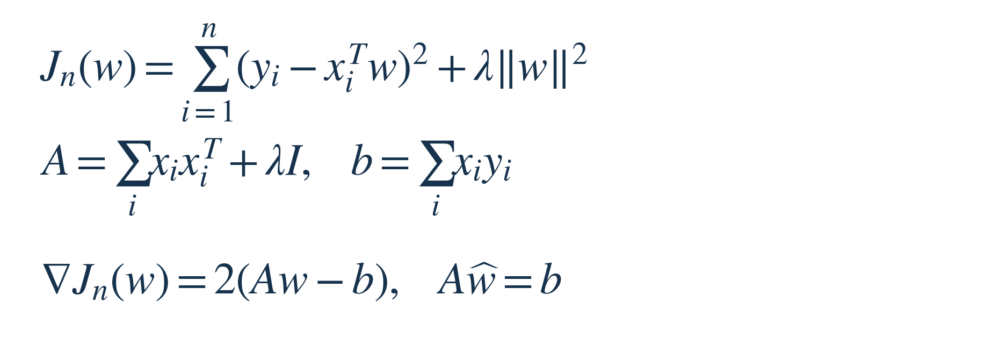
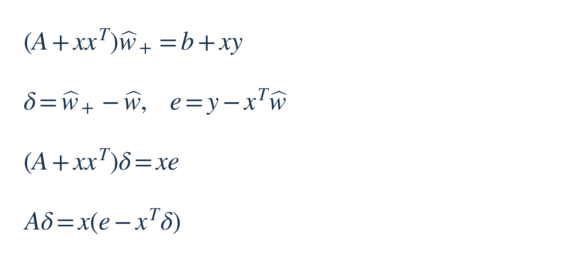
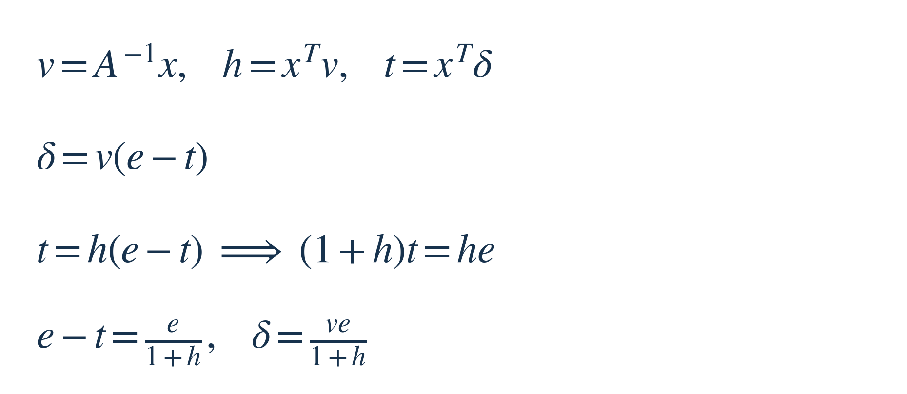
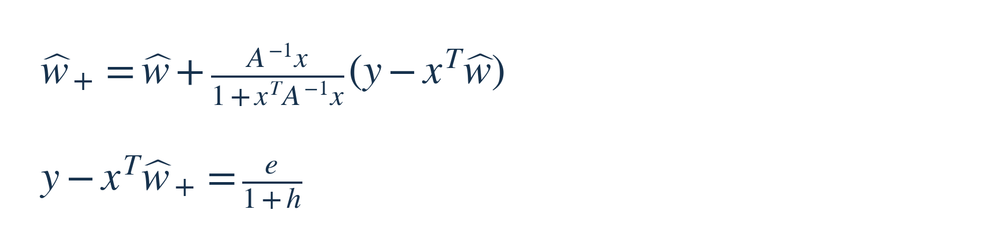
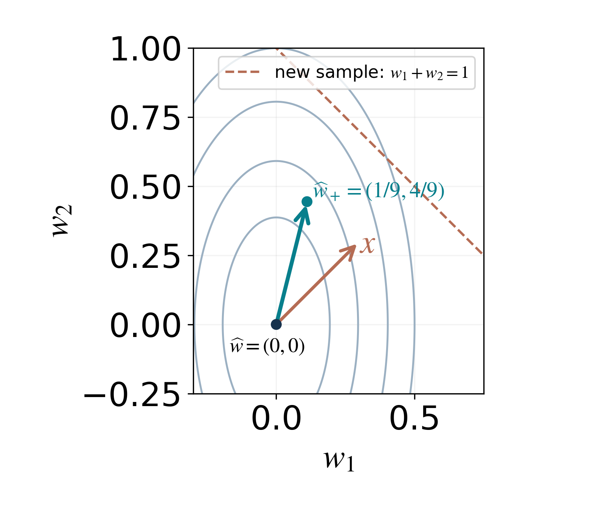
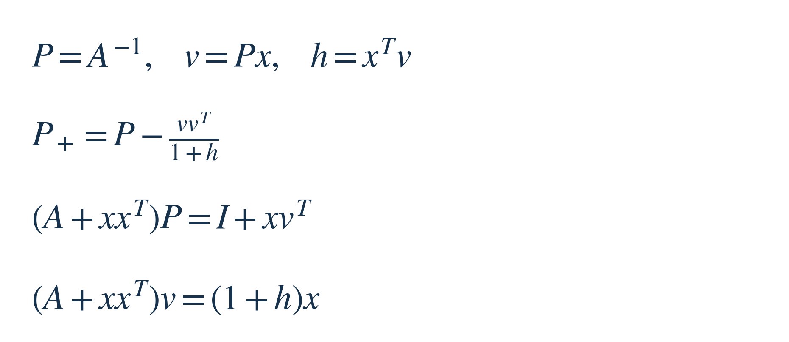
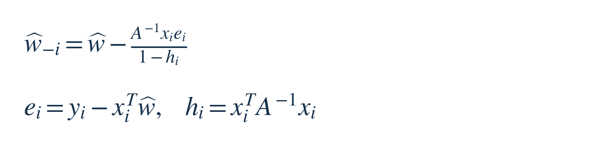
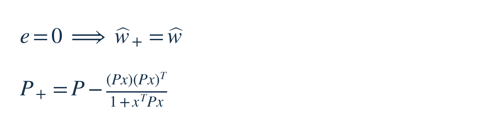

一条新观测到来后，线性模型要兼顾它和全部旧观测。若每次都重新求解一遍，之前的计算就浪费了。这一课从目标函数出发，推导一个精确更新：旧解沿一个由旧数据决定的方向移动，移动量由新观测的残差控制。主线约 6–8 分钟，推导与选读合计约 8–12 分钟。
本期新增的是有限样本、多参数模型的增量求解：新数据同时改变方程的系数矩阵和右端。它不同于把几个独立估计按逆方差合并，也不同于把固定草案投影到一个总量约束上。无需先读往期。
先明确要保留什么、调整什么
设每条观测由一个 d 维列向量 xᵢ 和标量结果 yᵢ 组成。固定这些数据，用可调的 d 维参数 w 作预测 xᵢᵀw。希望预测误差小，同时可用固定的 λ≥0 限制参数大小，因此选择“误差平方和＋参数平方惩罚”为目标并取最小值。这是本课选定的模型与损失，并非所有预测任务的唯一选择。
假定特征和结果已按固定尺度处理；所有新旧样本权重相同，λ 加入后不随样本数改变。I 是 d×d 单位矩阵，ᵀ 表示转置。把求和结果记为矩阵 A 和向量 b，逐项对 w 求导，令梯度为零：


以下假设 A 正定，即每个非零方向 s 都有 sᵀAs>0；这保证旧解唯一且 A 可逆。λ>0 足以保证这一点；λ=0 时，需要旧特征张成整个参数空间。这里的求逆记号表示数学关系，实际计算可以通过已有分解解方程。
新观测只增加一个方向
现在加入一条 (x,y)，仍最小化同一个累计目标。新增平方误差 (y−xᵀw)²，使 A 增加 xxᵀ，使 b 增加 xy。xxᵀ 作用于任意向量 s 时，结果是 x(xᵀs)：先取一个标量，再沿 x 放回。因此 x≠0 时，它是秩一变化。
用 ŵ 表示旧解，ŵ₊ 表示加入新观测后的新解，δ 表示两者之差，e 表示新观测在旧模型上的残差。把 ŵ₊=ŵ+δ 代入新方程，再用 Aŵ=b 消去旧项：


右边始终是 x 的某个倍数。于是 δ 必须沿 A⁻¹x 移动，而不一定沿 x 本身。现在只剩一个未知倍数，不必再解决一个全新的 d 维问题。
把未知向量压成一个标量
记 v=A⁻¹x、h=xᵀv。再令 t=xᵀδ，它恰好是新观测位置上的预测增量。上式两边作用 A⁻¹，得到 δ=v(e−t)；再左乘 xᵀ，便得到只含 t 的方程：


分母中的 1+h 有具体来源：参数移动后，原来的残差 e 也会变小；t=h(e−t) 把这次变化计算在内。因为 A 正定，h≥0，分母至少为 1。代回 ŵ₊=ŵ+δ，就得到中心结论：


这次移动已经求得加入新样本后的完整最优解，不是只走一步梯度下降。e 决定改动的正负；v 决定参数之间如何分摊改动；h 决定新位置上的预测能移动多少。新残差一般不为零，因为还要兼顾旧数据和固定正则项。
看见方向为什么会倾斜
用一个二维教学例子检查方向：两条旧观测分别为 x₁=(2,0)、x₂=(0,1)，结果都为 0，λ=0。旧目标是 4w₁²+w₂²，旧解在原点。新观测为 x=(1,1)、y=1，希望参数之和接近 1。


第一维偏离原点的平方代价更高，所以新解更多地移动第二维。此时 A=diag(4,1)，v=(1/4,1)，h=5/4，e=1；更新得到 ŵ₊=(1/9,4/9)，新残差为 4/9。图中箭头只展示方向与结果，前面的代数给出其理由。
怎样把本次计算留给下一次
只有旧解还不够；下一条观测仍需要旧数据对不同方向的约束。若保存 P=A⁻¹，就能同时更新这份信息。用 v=Px、h=xᵀv，可以验证下面的秩一逆更新：


验证时，第一项左乘后是 I+xvᵀ；第二项左乘后，用 (A+xxᵀ)v=(1+h)x，恰好得到 xvᵀ，两项相减剩下 I。这就是对称正定情形的 Sherman–Morrison 公式。
在稠密 d 维情况下，矩阵乘向量与外积各需 O(d²) 运算，保存 P 需 O(d²) 空间；相比每次从头做一般稠密分解的 O(d³)，它复用了旧计算。工程实现仍要考虑舍入误差与条件数，常用 QR 或 Cholesky 更新维护分解；数学上有逆公式，不代表实现时应每次显式求逆。Stanford 讲义第 20–23 页
同一结构出现在哪里
在线拟合：例如固定一组多项式基函数，x 是这些函数在新输入点的取值，y 是实测结果，w 是待估计的系数。每次增加一条样本，更新的是同一个累计平方误差目标；固定正则、没有遗忘因子且精确算术下，结果与把全部样本一起求解相同。若要追踪不断变化的对象并遗忘旧数据，就需另写加权目标，不能直接把本式解释为自带遗忘。
删一法诊断：已拟合完整数据，想知道删掉某条样本会怎样。此时矩阵变化从加 xxᵀ 换成减 xᵢxᵢᵀ，右端也相应减去 xᵢyᵢ。把同样的差分步骤重复一次，得到下面的精确式；这里 A、ŵ 都来自删除前的完整数据，eᵢ 和 hᵢ 也按删除前计算。


删除后的矩阵仍正定时有 hᵢ<1。若 hᵢ 接近 1，删除可能很敏感；若等于 1，唯一解条件失效，不能继续除。这一应用用同一个秩一结构，直接回答一条数据对拟合结果的影响。Berkeley 课程的删除公式
使用前检查三个条件
先确认目标真的是固定特征下的平方损失，且正则和样本权重按约定保持；再确认 A 可逆以及新增或删除后的矩阵条件；最后区分代数精确与浮点稳定。特征变换随训练改变、非线性模型重训、鲁棒损失等问题，通常不会直接保留这条精确更新。本文的数字与图均为教学核验，不是真实训练实验。
想一想
若新样本恰好被旧模型预测对，即 e=0，参数和 P 是否都会保持不变？先作判断，再看答案。
展开答案
参数保持不变，因为增量正比于 e。P 一般仍会改变：只要 x≠0，正定 P 下 Px≠0，逆更新仍减去一个非零外积。也就是说，这条观测没有改变当前最优点，却改变了后续新数据影响参数的方式。

